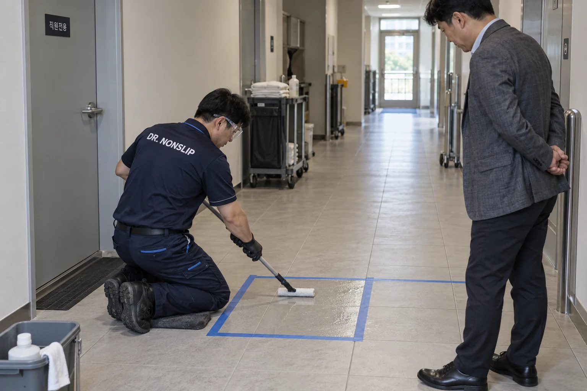
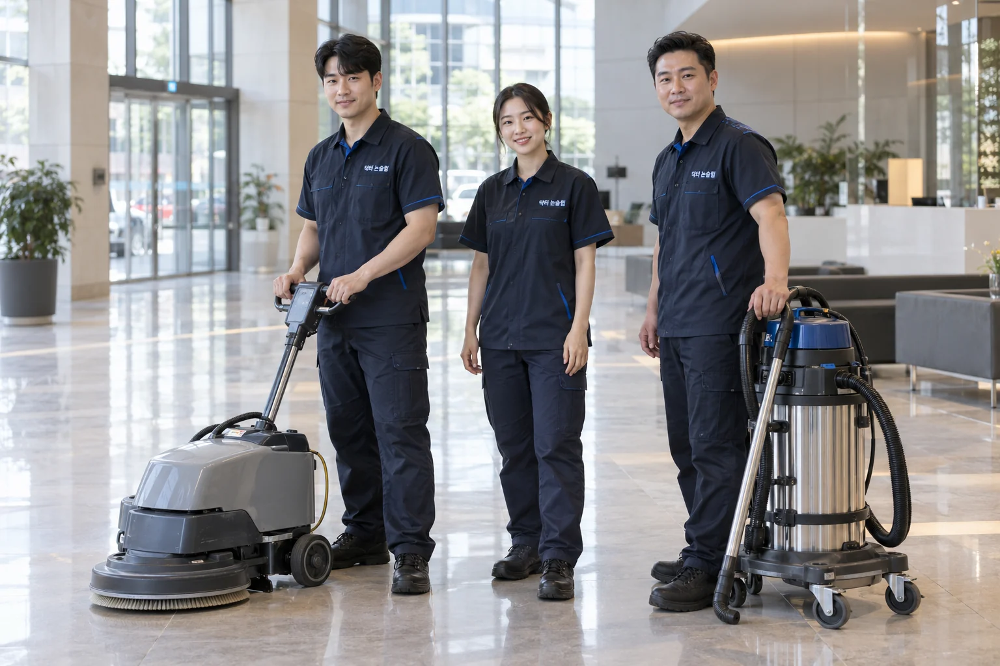
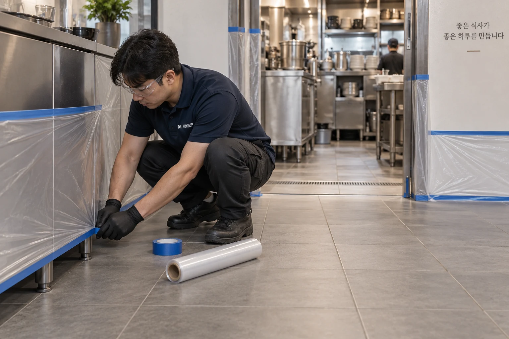
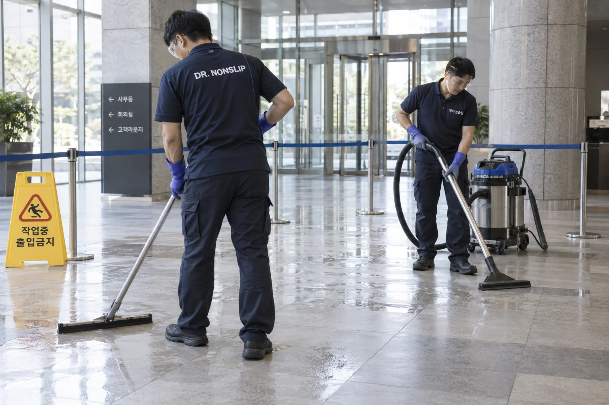

미끄러운 구역부터 확인합니다.
물기가 생기는 곳과 이동 동선을 살피고, 실제 바닥의 샘플로 시공 조건을 정합니다.
회사소개 · 닥터 논슬립
고객을 맞는 로비, 직원이 일하는 주방, 가족이 쓰는 욕실.
닥터 논슬립은 기존 바닥의 미끄러움을 개선하는 전문 시공 브랜드입니다.

현장을 관리하는 방식

물기가 생기는 곳과 이동 동선을 살피고, 실제 바닥의 샘플로 시공 조건을 정합니다.

금속·집기·벽면을 보양하고, 작업 구역과 이용자 동선을 분리합니다.

잔여물을 정리하고 결과를 함께 확인합니다. 이용 시점과 청소 방법도 안내합니다.